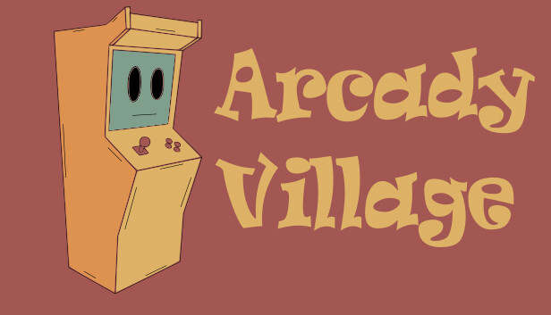

Arcady Village

Project Description
Arcady Village is an innovative life and economic simulation that combines two distinct gameplay loops. The player takes on the role of an arcade hall owner in a small-town setting.
Game Mechanics
Daily Exploration
During the day, the player explores the town, interacts with NPCs, and participates in various activities. Each day offers new opportunities for exploration and interaction.
Arcade Hall Management
In the evenings, the gameplay transforms into a management scenario, in which the player must run their arcade hall.
Arcade Games
A core aspect of the game is the ability to populate the arcade hall with a variety of arcade machines. Numerous small arcade games in 2D or 3D have been developed and implemented within the game.
Arcade Game Examples


Gameplay Pictures


Technologies
Playable Web Builds
Web builds of the arcade games will be available for testing soon.